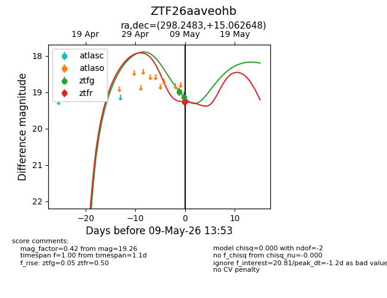
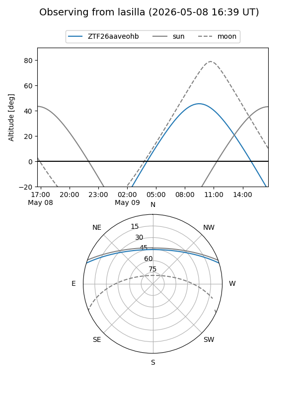
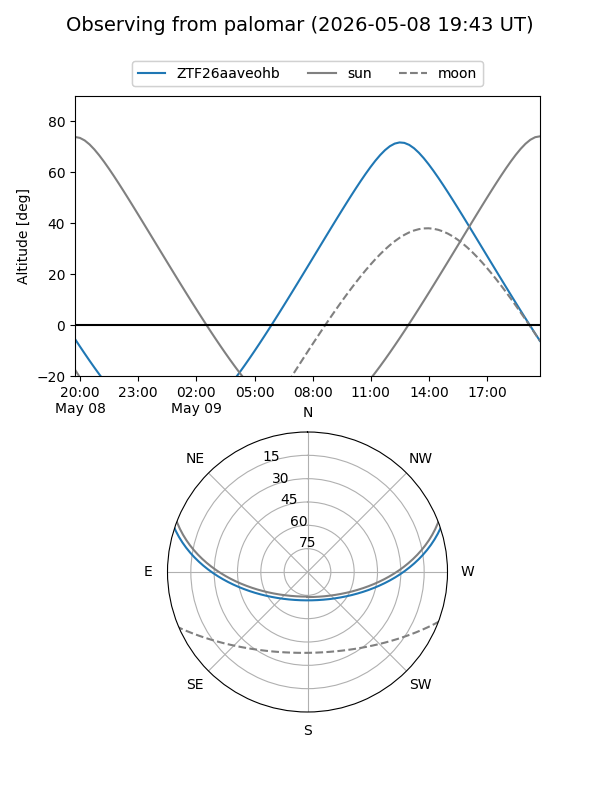
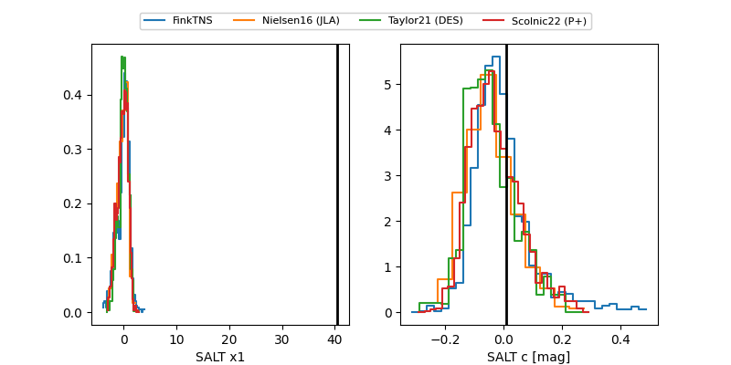

ZTF26aaveohb
Target ZTF26aaveohb at 2026-05-09 13:54
Aliases and brokers:
FINK: link
Lasair: link
ALeRCE: link
alt names
ZTF26aaveohb (ztf,fink_ztf)
Coordinates:
equatorial (ra, dec) = 298.2483,+15.06265
equatorial (HMS+DMS) = 19:52:59.59,+15:03:45.53
galactic (l, b) = (53.4339,-6.29001)
Flags:
Photometry:
last ztfg=19.14, ztfr=19.26
2 ztfg, 1 ztfr detections
Lightcurve

Visibility


Additional plots
